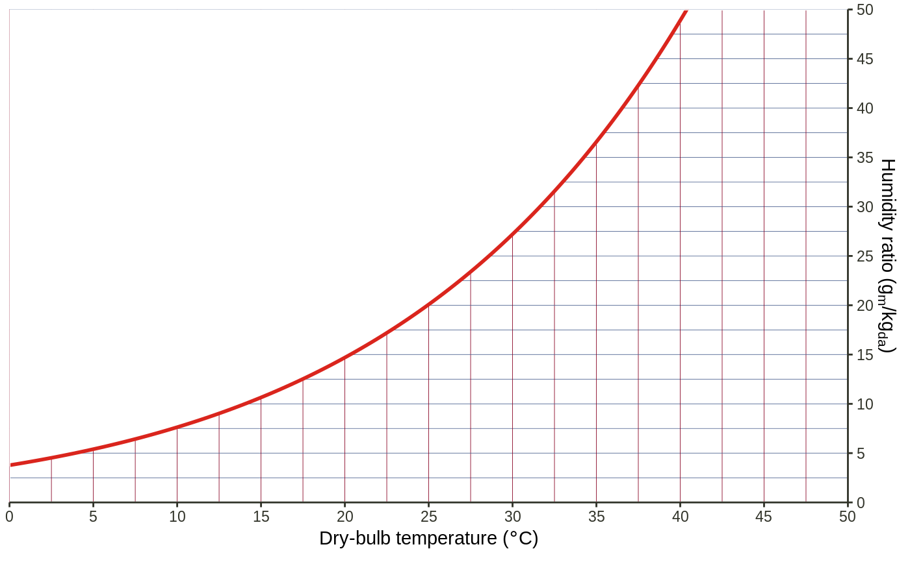

This function is the equivalent of ggplot2::ggplot() in ggplot2.
It takes care of setting up the plot object along with creating the layout
for the plot based on the graph and the specification passed in.
Alternatively a layout can be prepared in advance using
create_layout and passed as the data argument. See Details for
a description of all available layouts.
ggpsychro( data = NULL, mapping = aes(), tdb_lim = c(0, 50), hum_lim = c(0, 50), altitude = 0L, mask_style = waiver(), sat_style = waiver(), units = "SI", mollier = FALSE )
| data | Default dataset to use for plot. If not already a data.frame,
will be converted to one by |
|---|---|
| mapping | Default list of aesthetic mappings to use for plot. If not specified, must be supplied in each layer added to the plot. |
| tdb_lim | A numeric vector of length-2 indicating the dry-bulb
temperature limits. Should be in range
|
| hum_lim | A numeric vector of length-2 indicating the humidity ratio
limits. Should be in range
|
| altitude | A single number of altitude in m [SI] or ft [IP]. |
| mask_style | A list containg settings to format mask area. Will be
directly passed to
|
| sat_style | A list containg settings to format saturation line. Will be
directly passed to
Learn more about setting these aesthetics in |
| units | A string indicating the system of units chosen. Should be either
|
| mollier | If |
An object of class gg onto which layers, scales, etc. can be added.
ggpsychro()